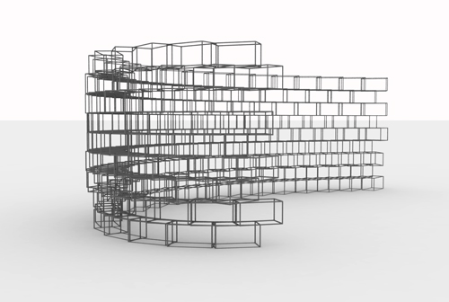

<!doctype HTML>
<html>

<head>

<link rel="stylesheet" href="../../Style_sheets/Project_styles.css" type="text/css" />
<link href="../../Style_sheets/jquery.mCustomScrollbar.css" rel="stylesheet" type="text/css" />

<script type="text/javascript" src="http://use.typekit.com/gfg0phy.js"></script>
<script type="text/javascript">try{Typekit.load();}catch(e){}</script>

	<title>Caitlin Santone</title>
	
	<script type="text/javascript">

  var _gaq = _gaq || [];
  _gaq.push(['_setAccount', 'UA-29755784-1']);
  _gaq.push(['_trackPageview']);

  (function() {
    var ga = document.createElement('script'); ga.type = 'text/javascript'; ga.async = true;
    ga.src = ('https:' == document.location.protocol ? 'https://ssl' : 'http://www') + '.google-analytics.com/ga.js';
    var s = document.getElementsByTagName('script')[0]; s.parentNode.insertBefore(ga, s);
  })();

</script>
	
</head>
</html>

<body>

<div class='main'>

			<div class='running-text'>
			<p><b>Experiments in Grasshopper</b></p>
			<p><b>Date</b> 2012<br/></p>
			
				
			<p>These designs are selections from a series of exercises developed in the Grasshopper generative modeling plug-in for Rhinoceros, and rendered using V-Ray. </p>
			</div>
	<div class="gallery-container">
  
			
			
			<div class="caption"<p>An iteration of the design below</p></div>
			
			
			
			<div class="caption"<p>A design for a bracelet. First an octagonal shape was created in Rhino and then it was tiled across a series of arcs using Grasshopper. Differentiation in size is based on degree of angles. </p></div>
			
			
			
			<div class="caption"<p>Interpolated truss design inspired by fishscales</p></div>
			
			
			
			<div class="caption"<p>Interpolated truss design inspired by fishscales</p></div>
			
			
			
			<div class="caption"<p>An interpolated truss. Textures are added in V-Ray to simulate frosted glazing.
			</p></div>
			
			
			
			<div class="caption"<p>This design uses a point attractor to locate spheres</p></div>
			
			
			
			<div class="caption"<p>A rotated block wall. Original block is created in Rhino and tiled across a wall in Grasshopper according to specific (and adjustable) parameters.</p></div>

			
			
			
			<div class="caption"<p>This is an iteration of the rotated block wall shown above. In order to give the wall a wire-like quality, I added a pipe component to the original box parameter block which is rotated.</p></div>
			
			
			
			<div class="caption"<p>Elevation view of above design</p></div>
			
		
			
	
		
			
    </div>
			
  </div>
			
  <div class='clear'</div>
			
	
	</div>
</body>

<script src="https://ajax.googleapis.com/ajax/libs/jquery/1.7.2/jquery.min.js"></script>
<script src="http://ajax.googleapis.com/ajax/libs/jqueryui/1.8/jquery-ui.min.js"></script>
<script src="../../Scripts/jquery.mousewheel.min.js"></script>
<script src="../../Scripts/jquery.mCustomScrollbar.js"></script>
<script src="../../Scripts/project.js"></script>
</html>

